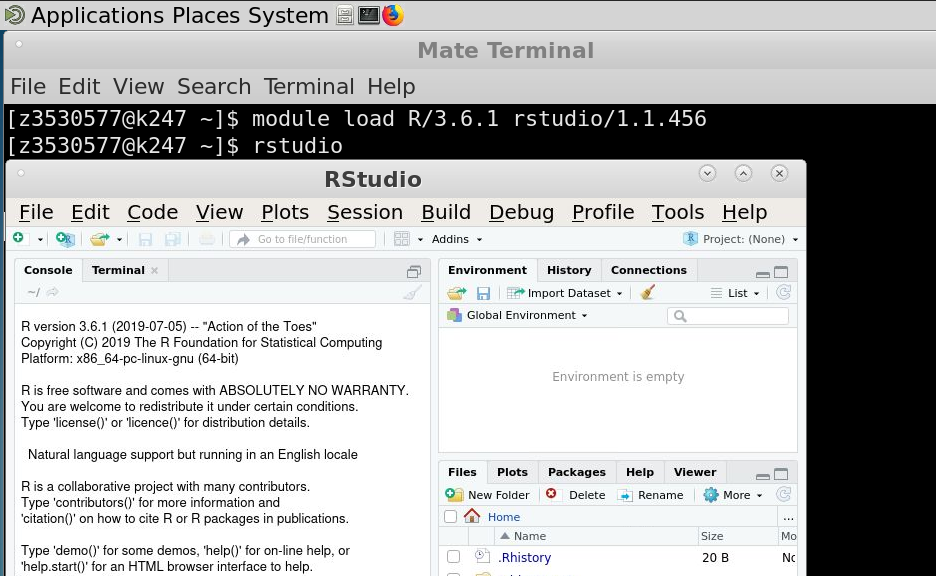

Accessing Katana¶
Anyone at UNSW can apply for a general account on Katana. This level is designed for those that think Katana would suit their research needs or will typically use less than 10,000 CPU hours a quarter. This level still gets access to the same level of support including software installation, help getting started or running their jobs. The only difference is the number of compute jobs that can be run at any time and how long they can run for - general users can only use a 12 hour Walltime.
If your needs require more CPU hours or consulation, some Faculties, Schools and Research Groups have invested in Katana and have a higher level of access. Users in this situation should speak to their supervisor.
Requesting an Account¶
To apply for an account you can send an email to the UNSW IT Service Centre giving your zID, your role within UNSW and the name of your supervisor or head of your research group.
Connecting to Katana¶
Note
When you are connecting to Katana via katana.restech.unsw.edu.au you are connecting to one of two login nodes katana1.restech.unsw.edu.au or katana2.restech.unsw.edu.au. If you have a long running TMUX open, you will need to login to the node on which it was started.
Linux and Mac¶
From a Linux or Mac OS machine you can connect via ssh in a terminal:
laptop:~$ ssh z1234567@katana.restech.unsw.edu.au
Graphical sessions¶
Warning
Please use the provided Katana OnDemand option if possible. It’s significantly easier to use and faster to set up.
Some software - Ansys, Jupyter Notebooks, Matlab, and R and RStudio being among the most popular - are easier with a graphical session. If you require an interactive graphical session to Katana then you can use the X2Go client.
Start X2Go and create a session for Katana. The details that you need to enter for the session are:
Session name: Katana
Host: katana.restech.unsw.edu.au
Login: zID
Session type: Mate

Warning
The usability of a graphical connection to Katana is highly dependent on network latency and performance.
Once you have logged into a Katana desktop, you should start a terminal

Then run an interactive session. Here you can see a command similar to what you would run for an interactive session with 8 CPUs and 16 GB for one hour. You will probably need more time. You can tell your interactive session has started when you see the name of the machine change - in this image I am on k247.
qsub -I -X -l select=1:ncpus=8:mem=16gb,walltime=1:00:00

Once that’s started, you can load the modules and run the command line name of the software you want. That is how you run Graphical Interfaces or GUIs using Katana’s grunt.
